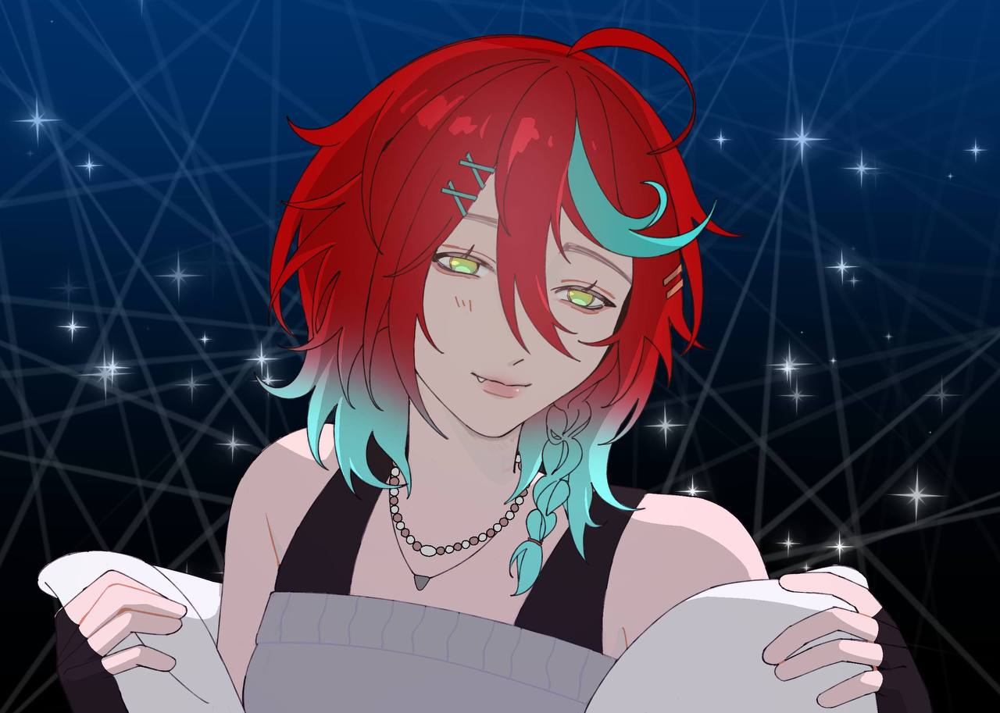
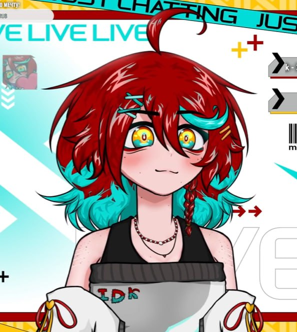
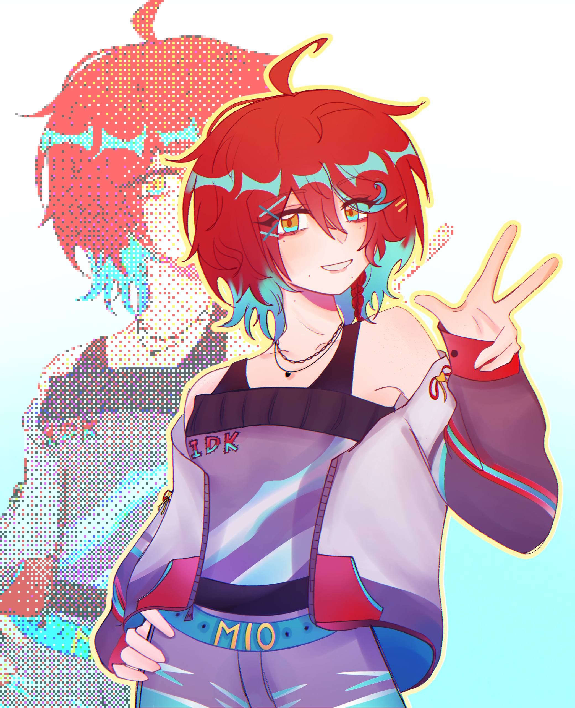
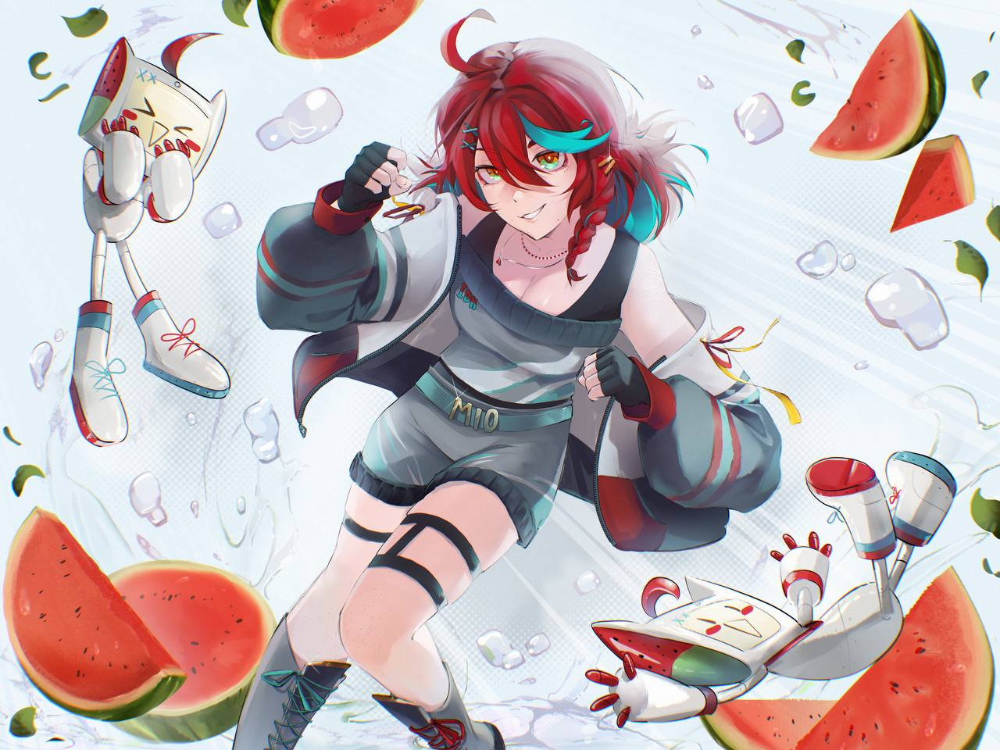

- Мио (mioshalDK) витубер с множеством талантов
и большими стремлениями

В свои 20 лет она умеет рисовать, играть на гитаре,
а также обладает прекрасным голосом

- У неё есть свой сквад (IDK),
который состоит из её интернет друзей,
большинство из которых тоже стримит

Помимо всего прочего она успевает ходить на работу,
записывать каверы и вести личную жизнь